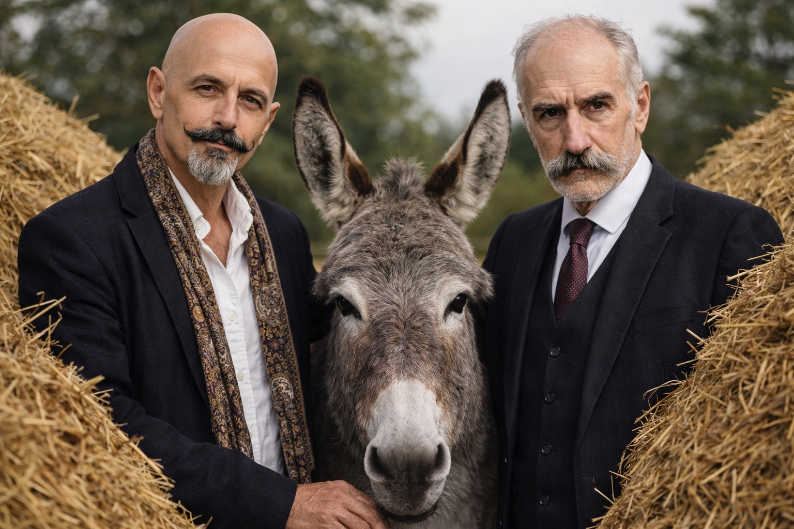

THE ASS
A Trialogue
The Donkey
Francis Ysidro Edgeworth
Michel de Montaigne

TD
Can we talk about hay?
MM
Hay? I think first of the stable, and of that warm, persistent scent that clings to the clothes long after one has left it...
TD
There are two heaps.
FE
If the two are equal in all relevant respects, the situation is symmetrical and the case analytically trivial.
TD
They are not a curve. They are two heaps.
MM
Curves are drawn by the mind, not by the hay.
TD
Luckily not on my arse.